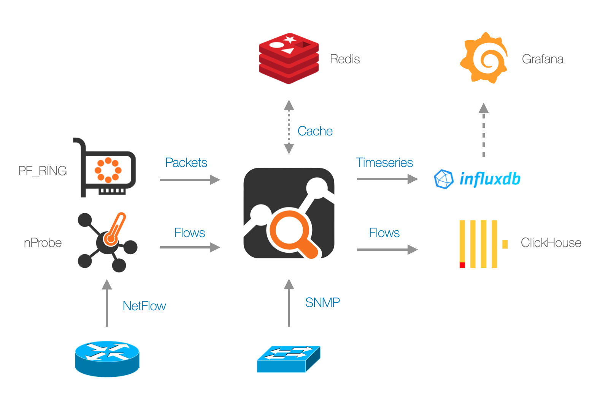

Что такое ntopng
ntopng — это веб-приложение для мониторинга трафика, способное:
Пассивный мониторинг трафика путем пассивного захвата сетевого трафика.
Соберите сетевые потоки (NetFlow, sFlow и IPFIX)
Активно контролировать выбранные сетевые устройства
Мониторинг сетевой инфраструктуры через SNMP
Основное различие между ntopng и сборщиком трафика заключается в том, что ntopng не только сообщает статистику трафика, но также анализирует трафик, делает выводы о наблюдаемом типе трафика и сообщает показатели кибербезопасности.

Релизы и возможности
ntopng Жизненный цикл разработки обычно составляет от 6 до 9 месяцев. История изменений и функций, реализованных в каждом выпуске, доступна на его Журнал изменений.
Пожалуйста, следите за обновлениями и следите за блогом ntop (http://блог.ntop.org) для получения всех последних новостей или посетите ntop Страница GitHub по адресу http://github.com/ntop.